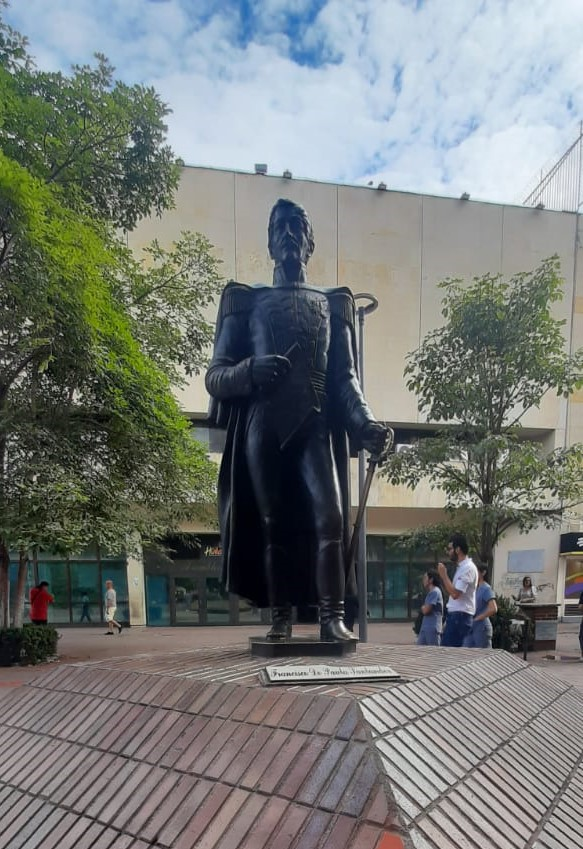
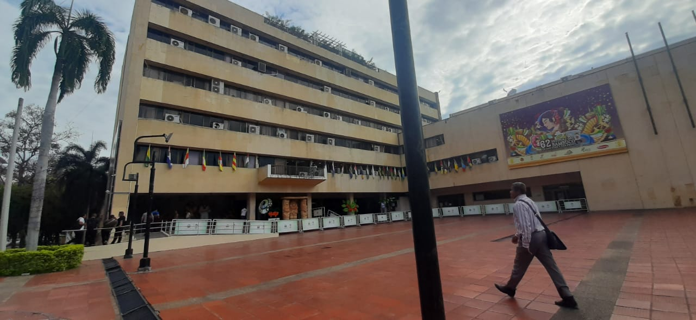
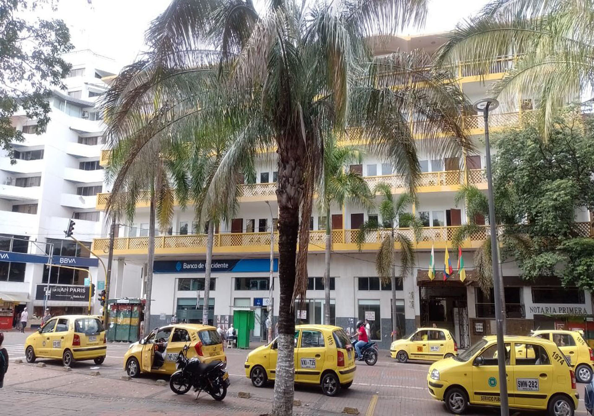
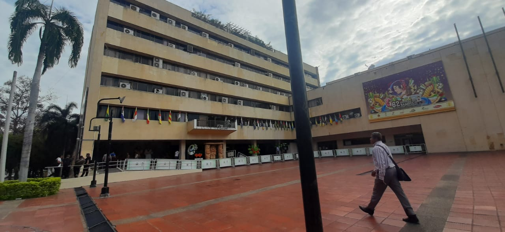
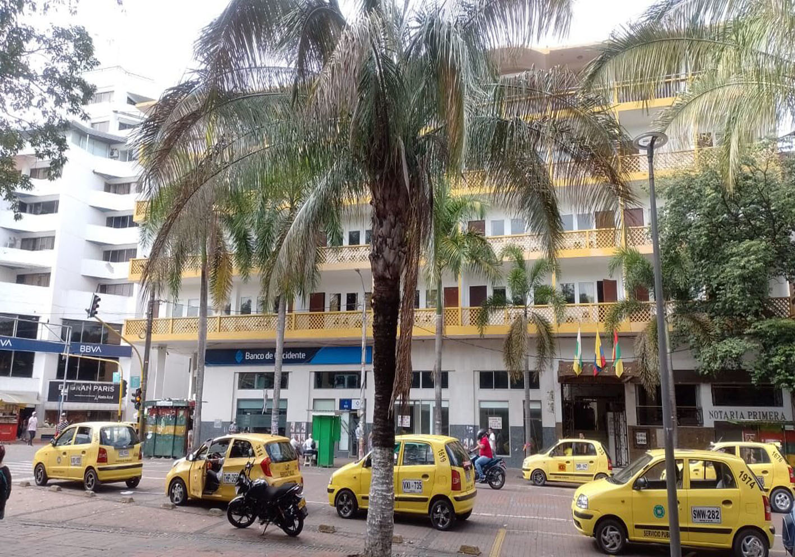

NEIVA , UNA CIUDAD PINTORESCA
Neiva es la capital del departamento del Huila, en Colombia. Se ubicada entre la Cordillera Central y Oriental, en una planicie sobre la margen oriental del río Magdalena, en el valle del mismo nombre, cruzada por el río Las Ceibas y el Río del Oro.
Esta es una de las principales ciudades del sur colombiano, ya que es el puerto de conexión para las ciudades capitales de Florencia, Mocoa, Popayán y Pasto.
Neiva fue fundada en 1539 por Juan de Cabrera, por orden de Sebastián de Belalcázar, con el nombre de Villa de la Limpia Concepción del Valle de Neiva, en el sitio que se conoce como las Tapias o Neivaviejo, a 5 kilómetros al sur de Campoalegre.
Además, es punto de conexión comercial entre ciudades como Bogotá, Popayán, Mocoa, Florencia y Pasto.

CONSTRUCCIONES CON ARTE
 



Neiva posee diversas construcciones con una historia detras de ellas, y no solo es com se hizieron, toda su estetica y su forma que han ido adaptando durante el tiempo la tiene, como los distintos edificios con sus formas tan peculiares que datan de siglos antiguos, como su construccion esta basada en estilos de arte del pasado, y como el tiempo, la naturaleza y la gente los a ido cambiando.